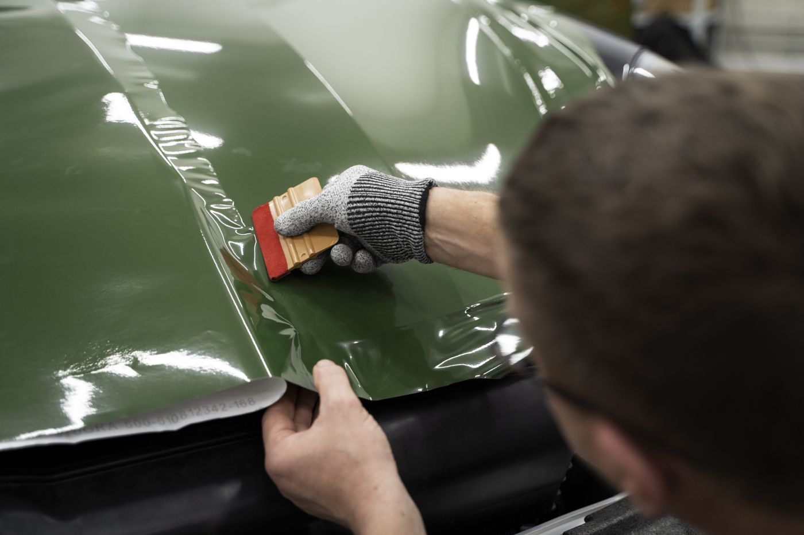
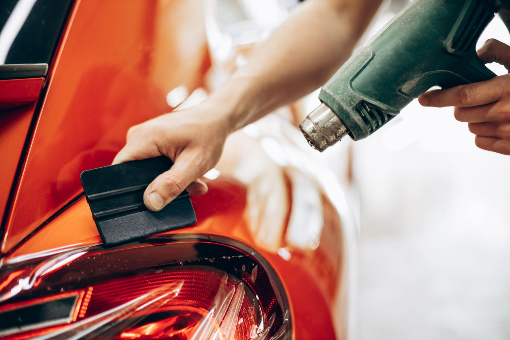

PPF Kaplama Nedir? Antalya PPF Kaplama Rehberi
Antalya PPF kaplama nedir, ne işe yarar, avantajları ve süreci nasıl işler? Antalya araç kaplama merkezi FoilMaster'dan kapsamlı rehber.

Seramik Kaplama mı, PPF mi? Antalya Seramik Kaplama Karşılaştırması
Antalya seramik kaplama ile Antalya PPF kaplama arasındaki farklar, avantajlar ve hangisinin sizin aracınıza uygun olduğu.

Antalya Renkli Araç Kaplama Rehberi: Seçenekler ve Dikkat Edilecekler
Antalya renkli araç kaplama nedir, hangi renk ve finiş seçenekleri var, bakımı nasıl yapılır? Antalya araç kaplama rehberi.

Antalya Cam Filmi: Isı, UV ve Gizlilik Avantajları
Antalya cam filmi faydaları nelerdir? Antalya sıcağında konfor ve güvenlik için araç cam filmi rehberi.